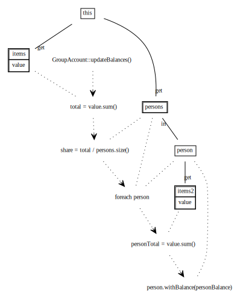
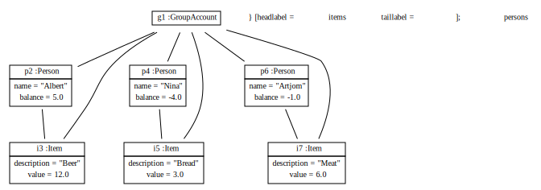

Scenario GroupAccountRuleRecognition
Start situation: classes have been generated. Now create some example object structure
We will call updateBalances() to compute the correct balances. Therefore, show updateBalances() first as code and then as a graphical model transformation operation diagram.
public void updateBalances( )
{
double total = this.getItems().getValue().sum();
double share = total / this.getPersons().size();
for (Person person : this.getPersons())
{
double myCosts = person.getItems().getValue().sum();
person.setBalance(myCosts - share);
}
}
The effects of executing updateBalances() is shown in: